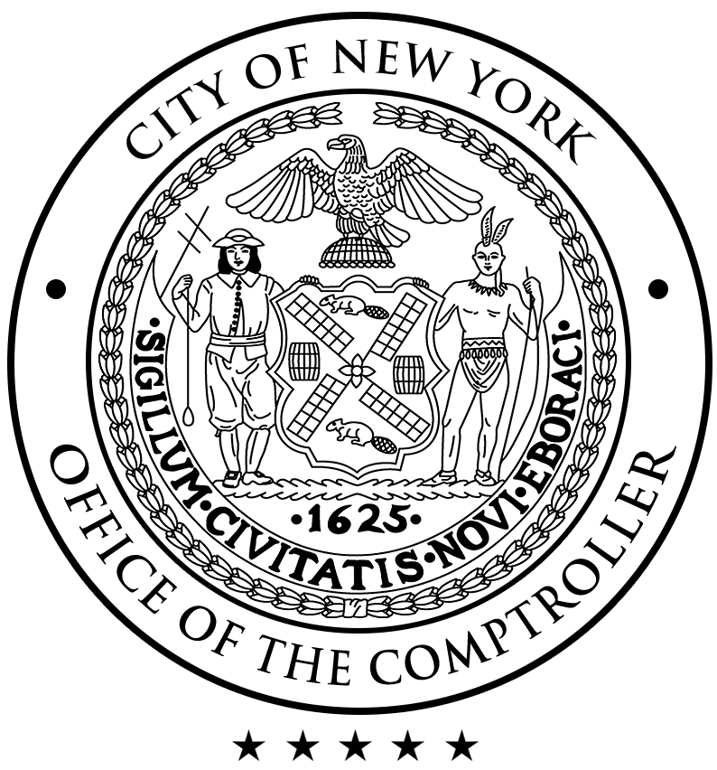
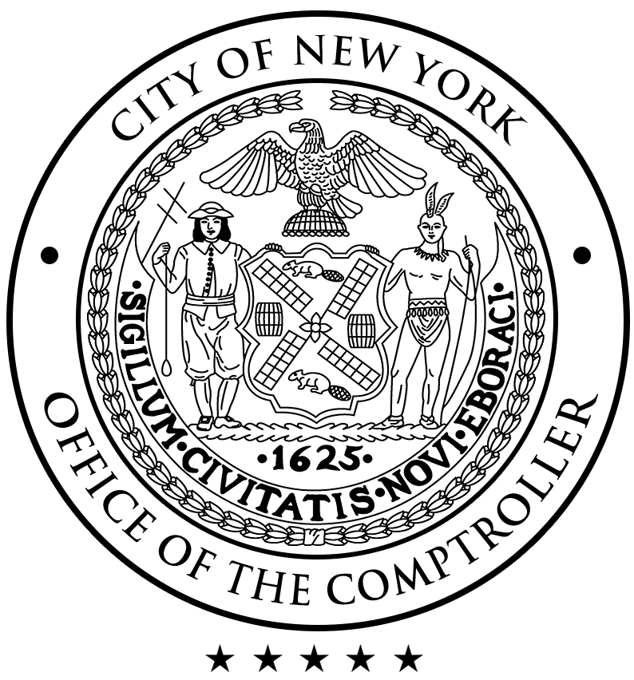

E X P E R I E N C E
Please download my PDF resume here.
CUNY Engineering Fellow
New York City Office of the Comptroller
Bureau of Engineering
Oct. 2020 - April 2021

New York City Office of the Comptroller
Bureau of Engineering
Oct. 2020 - April 2021

View Article
View COVID-19 Report
Selected as one of 20 recent CUNY graduates to participate in the Comptroller’s Fellowship program for future civic leaders.
Advanced Manufacturing Apprentice
The Zahn Innovation Center
Feb. 2020 - May 2020
The Zahn Innovation Center
Feb. 2020 - May 2020
Treasurer and Project Co-Lead
CCNY Women's Robotics Club
May. 2019 - May 2020

CCNY Women's Robotics Club
May. 2019 - May 2020